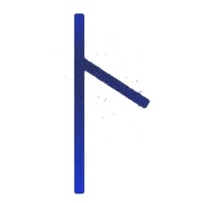
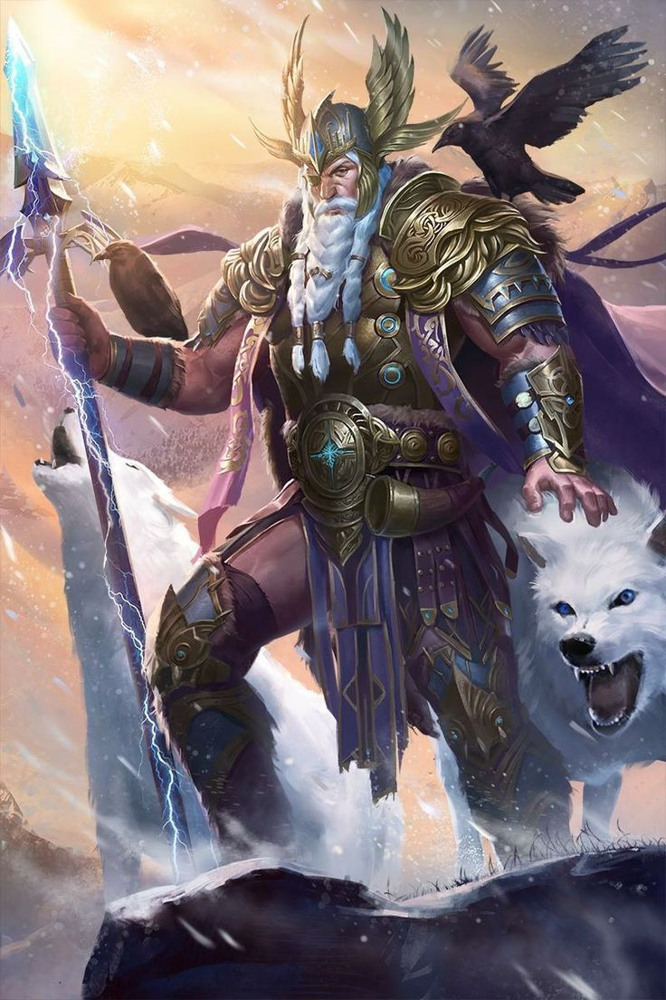
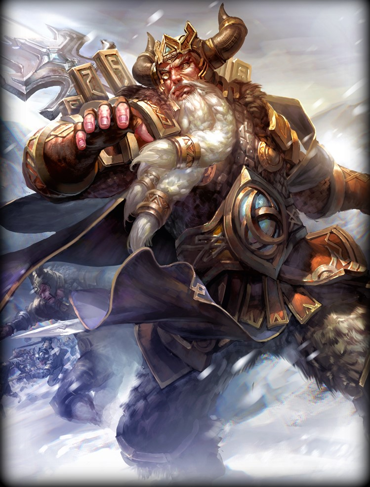
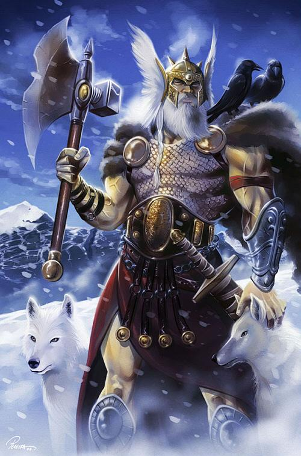

Также утверждается, что Один мог быть очень жестоким, если зайти слишком далеко, о чем свидетельствует его ежедневные пытки Мимира во время его заключения. Он также приказал своему самому сильному сыну Тору убить всех Ётунов, которых он смог найти, и предал Ётунов, Имира, в начале всего, самодовольно полагая, что он и озиры наводят порядок в королевствах. По правде говоря, он и его братья считали, что они выше и заслуживают быть такими. Вдобавок, хотя он, возможно, изначально искренне любил и заботился о Фрейе, он сверхурочно симулировал привязанность к Фрейе во время их брака, чтобы он мог научиться использовать ее магию ваниров в своих собственных целях. Как только он получил то, что хотел, Фрейя начала восставать против него, даже зашла так далеко, что разорвала брак; в ярости Один изгнал ее, чтобы навсегда остаться вМидгард, а также ограбление богини ее воинственного духа; следовательно, делая ее неспособной нанести прямой вред чему-либо, даже чтобы защитить себя.

Норвежская мифология
Один появился в героической литературе как защитник героев; павшие воины присоединились к нему в Валгалле . У него был мифический конь по имени Слейпнир , у которого было восемь ног, на зубах были начертаны руны, и он мог скакать по воздуху и над морем. Один был одним из величайших волшебников среди богов и был связан с рунами. Он также был Богом поэтов. Внешне он был стариком, с распущенной бородой и только одним глазом (второй он отдал в обмен на мудрость).

Игра
Один был внуком Бури, первого из озирских богов, который произошел от Имира , первого Гиганта и отца всей жизни и одного из сыновей Борра. Однако, в отличие от Имира, Один чувствовал, что озиры подходят для верховных правителей Девяти миров, и поэтому он вместе со своими братьями Вили и Ве убил Имира и всех, кто стоял на их пути, а Один занял место "Всеотец", после этого кровь Имира утопила всех Йотнаров, кроме Бергельмира и его жены. Затем Один создаст царство Мидгард из разорванной плоти Имира. В конце концов, Один создаст первых людей; Спроси и Эмбла.
В неизвестный момент Один продолжит формировать Асгард и объявит себя королем озиров . Он также возьмет под контроль Валгаллу . Позже он использовал Валгаллу как часть своих планов на будущее, чтобы попытаться помешать Рагнароку , предсказанному катастрофическому событию, которое приведет к апокалипсису и гибели большинства норвежских богов . Чтобы подготовиться к надвигающейся угрозе, Один допустил в Валгаллу только лучших воинов, погибших в битве. Всех остальных он отправил в ледяную пустошь, известную как Хельхейм.
В какой-то момент Мимир пришел к Одину с Мимисбрунн, «мистическим колодцем знаний», но на самом деле он был наполнен достаточным количеством волшебных грибов, чтобы дать видения даже столь могущественному богу, как он. Сначала Один был настолько впечатлен этим колодцем, что все, что он увидел в своих галлюцинациях, заставило его вырвать оба глаза. К счастью, Мимир не позволил ему закончить работу, и Мимир убедил его, что он пожертвовал своим глазом ради знаний. Однако Один мгновенно понял, что Мимир обманул его, но позволил ему стать своим советником из-за его огромного ума. После того, как он заключил в тюрьму своего советника, Один удалил Мимиру один глаз и ежедневно мучил его. Один также искал Брока и Синдри, чтобы построитьСтатуя Тора, внутри которой можно спрятать отрезанный глаз Мимира. В гномах отказались , но по - прежнему вынуждены построить статую.
Примерно в это же время Один также начал жениться на женщинах и расширять свою семью, надеясь получить сильных сыновей. За это время Один взял по крайней мере двух жен, первая из которых дала ему Тир . Один также женился на великанше Фьёргин , с которой у него был Тор . Через некоторое время после рождения Тора Фьёргин умер, оставив Одина убитым горем и одиноким на долгие годы.
Однажды Один встретил каменного великана Хрунгнира и был так забавлен его легковерным характером, что вместо того, чтобы убить его немедленно, Один пригласил его в Асгард, напоил его и подстрекал на все манеры хвастовства и выходок, даже принимая угрозу Хрунгнира. убить всех озиров и забрать всех женщин Асгарда обратно в Йотунхейм в шутку. Однако это подошло к концу после того, как Тор убил каменного гиганта и был раздавлен его трупом, и Один приказал всем своим людям вытащить его из Тора, но ни один из озиров не был достаточно силен, чтобы сделать это, и сам Тор был слишком пьян, чтобы снять с него каменного гиганта, пока внуки Одина Магни и Моди не пришли и не освободили Тора.
Укрепив свое правление как «Всеотец», Один продолжал вести войны из-за других царств. Он не сталкивался с какими-либо трудностями до Ванир , где две силы сражались до тупика. В этот момент обе стороны устали сражаться, и Один в конце концов согласился жениться на Фрейе, чтобы положить конец битве, и чтобы Один мог тайно изучить ее магию. Вместе они произвели младшего сына Одина, Бальдура . Какое-то время эти двое, казалось, очень заботились друг о друге, при этом Мимир отметил, что их отношения, казалось, повторяли отношения Одина и Фьёргина, когда Один относился к ней с любовью и уступал большинству ее желаний, давая Валькириинекоторая свобода, когда она этого хотела. Однако Фрейя в конце концов покинула Одина, обезумев из-за его обращения с гигантами, злоупотребления ее знаниями и предательства ее доверия. Это сильно разозлило Всеотца и оставило у него сильное чувство предательства, из-за чего он проклял ее, чтобы она оставалась в заточении в Мидгарде и никогда не причиняла вреда другому живому существу, даже в целях самообороны, из мелкой мести.

Личность
По словам Мимира, Один крайне параноидален в отношении всего и вся, что, по его мнению, могло бы иметь хоть малейший шанс угрожать его правлению и правлению озиров, так же, как его греческий коллега Зевс до того, как Кратос убил его. Сюда входили гиганты, ваны и даже любимый Тир, его собственный сын. Кроме того, Мимир сказал, что Один чрезвычайно умен, почти такой же умен, как Один считает себя, поскольку он смог выяснить, что Кратос и Атрей сыграли важную роль в приходе Рагнарёка , возможно, благодаря Гроа.пророчество. Подразумевается, что он также сильно боится Кратоса, как и Зевс, однако, в отличие от олимпийца, он ничего не знал о нем, кроме того, что он чрезвычайно силен, столкнувшись с Моди, Магни и Бальдуром и убив их.
Кроме того, Один ревниво хранит все собранные им знания и секреты. Он предал и обманул многих почитаемых фигур в скандинавской мифологии, которые обладали знаниями, которых не знал он, и, получив их, жестоко расправился с ними. Мимир заявил, что Один одержим пророчествами о будущем, изображая себя «всезнающим и всевидящим», но, что более важно, мотивированным, чтобы контролировать будущее, свою судьбу и все царства. Мимир воспользовался этим, чтобы стать своим советником, когда предложил ему «колодец знаний», который позволил ему видеть видения, не зная, что это действительно колодец с водой, смешанной с галлюциногенными грибами.

Также утверждается, что Один мог быть очень жестоким, если зайти слишком далеко, о чем свидетельствует его ежедневные пытки Мимира во время его заключения. Он также приказал своему самому сильному сыну Тору убить всех Ётунов, которых он смог найти, и предал Ётунов, Имира, в начале всего, самодовольно полагая, что он и озиры наводят порядок в королевствах. По правде говоря, он и его братья считали, что они выше и заслуживают быть такими. Вдобавок, хотя он, возможно, изначально искренне любил и заботился о Фрейе, он сверхурочно симулировал привязанность к Фрейе во время их брака, чтобы он мог научиться использовать ее магию ваниров в своих собственных целях. Как только он получил то, что хотел, Фрейя начала восставать против него, даже зашла так далеко, что разорвала брак; в ярости Один изгнал ее, чтобы навсегда остаться вМидгард , а также ограбление богини ее воинственного духа; следовательно, делая ее неспособной нанести прямой вред чему-либо, даже чтобы защитить себя. Чтобы добавить оскорбления к ране, он неправомерно превратил валькирий в чудовищных зверей, обрекая их на физические формы из-за своей неприязни к восстанию Фрейи, что в конечном итоге привело к опасному переполнению Хельхейма душами умерших. Наконец, он покинул Девять миров, чтобы пострадать во время Пустоши, закрыв врата Асгарда.
Также показано, что Один хранит мелкие обиды до почти веселой степени, поскольку он никогда не забывал, что Мимир перехитрил его, когда они впервые встретились. Когда Мимир окончательно впал в немилость, Один удалил ему один глаз. Кроме того, когда он потерял договоренность, которую он заключил с замаскированным Хримтуром при отделке стен Асгарда, он притворился, что сдерживает свою часть сделки, чтобы позволить строителю поговорить со своей королевой Фрейей, только чтобы Всеотец затем дважды пересек Гигант, и пусть Тор его убьет. Вдобавок, когда Скади отверг его привязанность, он обманом заставил ее убить собственного отца во время охоты.
Его Подразумевается , что Одина может обладать одновременно Превосходство комплекс и комплекс неполноценности , как он искренне считает , что его путь является единственным способом , и что асы суждено быть Верховные Правители вселенной еще , казалось бы , теряет всякий и все самообладание , когда кто - то или что - то приходит, чтобы бросить вызов этим убеждениям.
Многие люди, такие как Фрейя и Мимир, заявляют, что Один движется страхом перед собственной судьбой, которая, как говорят, находится в руках гигантов, что приводит к его паранойе и ненависти к ним. Тем не менее, он также завидует и желает способности Гигантов к предвидению, желая использовать эти способности, чтобы изменить свою судьбу, когда появится Рагнарок. Возможно, это единственное, что объединяет Всеотца и Кратоса, не верящего в судьбу, и в чем они согласятся.
Однако Один не полон без способности чувствовать любовь и доверять другим. Он был известен тем, что искренне влюбился в Фьёргина, несмотря на его последующую ненависть к Гигантам, в конечном итоге женился и зачал с ней самого могущественного из своих сыновей Тора. Ее смерть вызвала такое горе и печаль Одина, что даже Мимир признает, что Один был обезумевшим и одиноким после смерти своей великой любви.
Чтобы облегчить его боль и положить конец войне озиров и ванировМимир предложил жениться на Фрейе. В это время Мимир заметил, как вновь всплыло то же самое счастье, которое Один был с Фьёргин, и, хотя он женился на ней частично, чтобы положить конец войне (а также чтобы изучить ее магию сейра), Один относился к Фрейе с любовью и уступил большинству ее желаний. на самом деле исполняет столько желаний Фрейи, что Мимир сказал, что даже он потерял счет тому, сколько желаний, которые Фрейя загадывала Одину, он охотно исполнил. Он был готов дать валькириям некоторую свободу, потому что Фрейя этого хотела. Их отношения в конечном итоге стали натянутыми, когда Один стал все более одержим Рагнарёком и Йотнарами, что заставило Фрейю разорвать брак. Судя по реакции Одина на предательство Фрейи, очевидно, что он действительно испытывал к ней романтические чувства и испытывал сильное чувство предательства после их развода.
Подразумевается, что вначале намерения Одина были благородными, хотя и ошибочными, и он искренне хотел того, что было лучше для своего народа и всех остальных в целом, поскольку он стремился предотвратить Рагнарок (событие, которое впоследствии убило мириады невинных людей, включая Aesir и Vanir) не происходит. Столетия царящая бесспорный с неограниченной властью, а также жизни неудачных испытаний однако, постепенно закаленные его до точки, где он не смог, или, возможно, не желая признать, что его действия и действия своих коллег æsir оказывает негативное влияние и на самом деле по иронии судьбы вел их всех к той самой катастрофе, которой он так долго пытался избежать.
Его Подразумевается , что Одина может обладать одновременно Превосходство комплекс и комплекс неполноценности , как он искренне считает , что его путь является единственным способом , и что асы суждено быть Верховные Правители вселенной еще , казалось бы , теряет всякий и все самообладание , когда кто - то или что - то приходит, чтобы бросить вызов этим убеждениям.
Многие люди, такие как Фрейя и Мимир, заявляют, что Один движется страхом перед собственной судьбой, которая, как говорят, находится в руках гигантов, что приводит к его паранойе и ненависти к ним. Тем не менее, он также завидует и желает способности Гигантов к предвидению, желая использовать эти способности, чтобы изменить свою судьбу, когда появится Рагнарок. Возможно, это единственное, что объединяет Всеотца и Кратоса, не верящего в судьбу, и в чем они согласятся.
Однако Один не полон без способности чувствовать любовь и доверять другим. Он был известен тем, что искренне влюбился в Фьёргина, несмотря на его последующую ненависть к Гигантам, в конечном итоге женился и зачал с ней самого могущественного из своих сыновей Тора. Ее смерть вызвала такое горе и печаль Одина, что даже Мимир признает, что Один был обезумевшим и одиноким после смерти своей великой любви.
Чтобы облегчить его боль и положить конец войне озиров и ванировМимир предложил жениться на Фрейе. В это время Мимир заметил, как вновь всплыло то же самое счастье, которое Один был с Фьёргин, и, хотя он женился на ней частично, чтобы положить конец войне (а также чтобы изучить ее магию сейра), Один относился к Фрейе с любовью и уступил большинству ее желаний. на самом деле исполняет столько желаний Фрейи, что Мимир сказал, что даже он потерял счет тому, сколько желаний, которые Фрейя загадывала Одину, он охотно исполнил. Он был готов дать валькириям некоторую свободу, потому что Фрейя этого хотела. Их отношения в конечном итоге стали натянутыми, когда Один стал все более одержим Рагнарёком и Йотнарами, что заставило Фрейю разорвать брак. Судя по реакции Одина на предательство Фрейи, очевидно, что он действительно испытывал к ней романтические чувства и испытывал сильное чувство предательства после их развода.
Подразумевается, что вначале намерения Одина были благородными, хотя и ошибочными, и он искренне хотел того, что было лучше для своего народа и всех остальных в целом, поскольку он стремился предотвратить Рагнарок (событие, которое впоследствии убило мириады невинных людей, включая Aesir и Vanir) не происходит. Столетия царящая бесспорный с неограниченной властью, а также жизни неудачных испытаний однако, постепенно закаленные его до точки, где он не смог, или, возможно, не желая признать, что его действия и действия своих коллег æsir оказывает негативное влияние и на самом деле по иронии судьбы вел их всех к той самой катастрофе, которой он так долго пытался избежать.


Магическое мастерство: Один - чрезвычайно могущественный и опытный колдун, владеющий многими магическими искусствами, включая древнюю магию. Он также узнал Сейра от Фрейи. Один также единственный из озировских богов, который использует магию, которая вместе с его физическими способностями делает его еще более грозным.
Силы и способности
Один, как норвежский бог, бессмертен, прожив много тысячелетий. Только достаточно мощное оружие или чрезвычайно мощное существо вроде Фенрира может убить его.
Сверхчеловеческая сила: Один должен обладать огромным количеством сверхчеловеческой силы как король озиров, будучи по крайней мере сильнее, чем Бальдур и Тир. Возможно даже, что его сила, если не в физическом смысле, соперничает и или превосходит силу его сына Тора, бога силы. Единственные известные существа, которые превзошли его по силе, - это Старкар, Фенрир и Сурт, последний из которых должен был взять Одина и Тора, чтобы победить в Рагнароке, а первому суждено было поглотить Одина до смерти.
Сверхчеловеческая стойкость: Один должен быть чрезвычайно выносливым, поскольку он смог пережить столкновение с Имиром, первым существующим и самым могущественным из Ледяных гигантов. Во время Рагнарока Один также выживает в битве против Сурта, брата Имира и сильнейшего Огненного Великана. Однако, как заявил Мимир, Один не продержится долго в Хель, норвежском царстве мертвых, поэтому его стойкость ограничена, и во время Рагнарока он будет в конечном итоге поглощен Фенриром.
Магическое мастерство: Один - чрезвычайно могущественный и опытный колдун, владеющий многими магическими искусствами, включая древнюю магию. Он также узнал Сейра от Фрейи. Один также единственный из озировских богов, который использует магию, которая вместе с его физическими способностями делает его еще более грозным.
Способности
Мастер бойцов : Как король Асгарда, Один должен быть чрезвычайно опытным бойцом с многовековыми боевыми тренировками и опытом. Даже в молодые годы смог убить Имира вместе со своими братьями. Наряду с Тором, Один сможет победить Сурта, Изначального Огненного Великана, а также исключительного бойца во время Рагнарока.
Высокий интеллект: Один чрезвычайно умен и умен, поскольку даже Мимир, самое умное существо из всех Девяти миров, признал его ум, сказав, что он почти так же умен, как считает себя. Услышав пророчество Рагнарока, он понял, что Кратос и Атрей сыграют в нем свою роль. Одина не обманула ложь Мимира о том, что он пожертвовал своим глазом ради знаний, правильно сделав вывод, что Мимир обманул его, и колодец знаний на самом деле просто заполнен волшебными галлюциногенными грибами, чтобы дать даже богу видения.
Мастер-мучитель : Один был известен как очень творческий и опытный мучитель, так как он лично мучил Мимира на протяжении многих веков до такой степени, что Мимир сказал, что он скорее умрет, чем будет продолжать пытать Один.

Мастер-мучитель : Один был известен как очень творческий и опытный мучитель, так как он лично мучил Мимира на протяжении многих веков до такой степени, что Мимир сказал, что он скорее умрет, чем будет продолжать пытать Один.